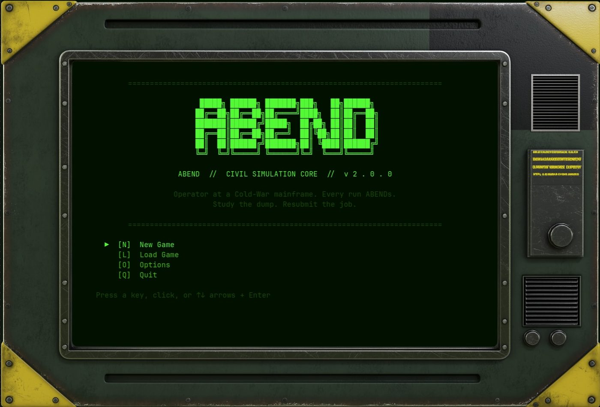
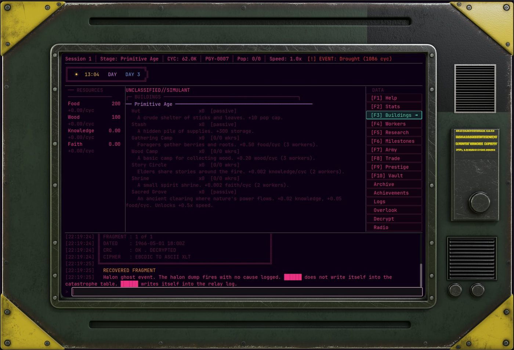

OPERATOR TERMINAL // ACTIVE
ABEND
Command-Line Civilization Simulation idler
Type commands. Run the simulations. Build empires. 22 ages from the primitive to the stars.
Command-Line Civilization Simulation idler
Type commands. Run the simulations. Build empires. 22 ages from the primitive to the stars.
ABEND is a civilization simulation idler where the interface is the users only access to unravel the mystery of project-abend. You are an Operator running a purpose-built bunker full of old retro hardware seemingly cobbled together hastily. YOu are in a decommissioned Cold War bunker. The terminal is not just a choice you have, its the only link between you and what remains of your world. The simulations must go on, you MUST complete the simulation, the data gathered could save humanity. You will type commands. The simulation will flourish or die at your fingertips.
Built in Godot 4 with a full CRT shader aesthetic: phosphor glow, scanlines, monochrome display, and retro keyboard input.
ABEND is a long-term project. The simulation engine is complete and the core systems are in place. The current focus is on content creation -- 288 buildings, 70 technologies, 74 milestones, 26 random events, and the full tech tree. The first public release will be a beta with the full simulation and a subset of content, followed by regular updates until the full release.


Ages
Epochs
Buildings
Technologies
Milestones
Worker Tiers
Building Sprites
Random Events
288 buildings across 22 ages including unique Wonders that grant permanent civilization bonuses and unlock age transitions.
70 technologies with prerequisite chains that multiply production, unlock new mechanics, and open paths through the epoch system.
Command soldiers. Launch expeditions with escalating risk and reward. Defend trade routes. Conquer ruins. The army is a resource, not a minigame.
Six NPC factions, multiple trade routes per faction. Diplomatic standing shifts with your choices and directly affects exchange rates.
Sacrifice your civilization for permanent meta-progression. Prestige bonuses carry across all future runs. The long game has a long game.
Every epoch boundary triggers a catastrophe. Endure, succumb, or defer. Each choice reshapes the civilization's trajectory and legacy score.
The entire game renders inside a terminal-style layout. The status bar tracks session state. The main panel switches between Buildings, Research, Army, Trade, Workers, and more. The log at the bottom is where the Operator types -- the machine responds there too. Everything else is context.
Primitive, Stone, and Bronze Ages. Humanity's first steps. Wood, stone, and fire.
Iron, Classical, and Medieval Ages. Empires of iron and faith rise and fall.
Renaissance, Colonial, and Industrial Ages. Steam, steel, and global ambition.
Victorian, Electric, and Atomic Ages. Electricity and the atom reshape civilization.
Modern, Information, and Digital Ages. Data flows become the rivers of power.
Cyberpunk, Fusion, and Space Ages. Augmented reality and the conquest of the solar system.
Interstellar, Galactic, Quantum, and Transcendent Ages. Between stars and beyond time itself.
Godot 4 engine, CRT shader, real audio, and the full depth of the civilization simulation. Terminal soul -- real game engine underneath.
MIT license, no royalties, excellent 2D pipeline. The right call.
Strongly typed, struct-friendly. Every mechanic ports cleanly from the original simulation engine.
Phosphor glow, scanlines, ambient flicker. In-world the display is 30 years old and running because nothing better exists for this purpose.
288 buildings, 70 techs, 74 milestones -- all defined in JSON. The simulation engine reads config, not hardcode.
ABEND is actively in development. Check back here as milestones ship.